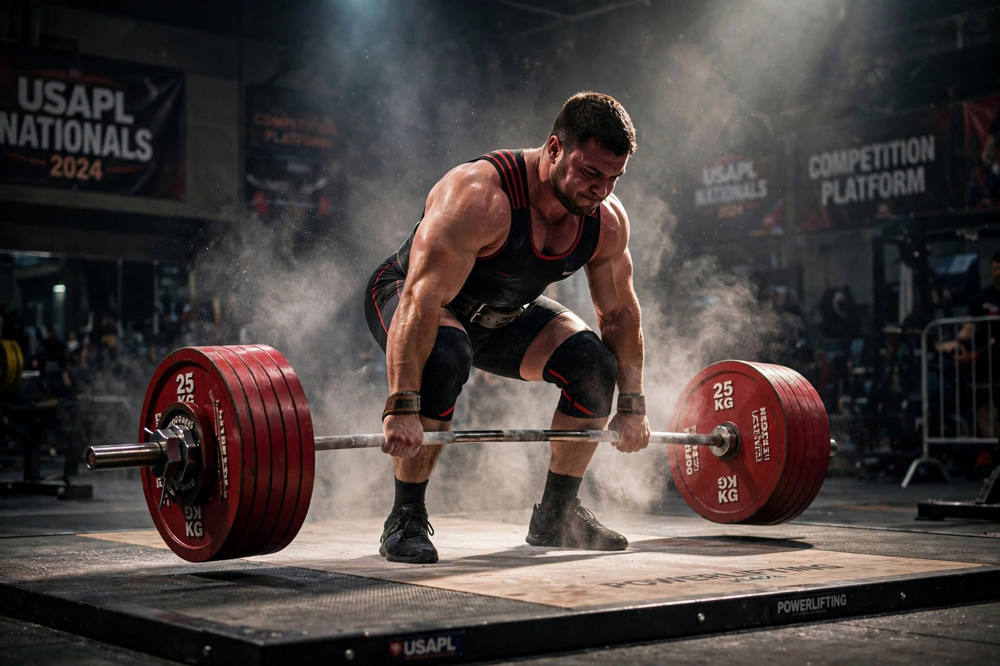

Powerlifting is a strength sport that consists of three attempts at maximal weight on three lifts: squat, bench press, and deadlift. As in the sport of Olympic weightlifting, it involves the athlete attempting a maximal weight single-lift effort of a barbell loaded with weight plates. Powerlifting grew out of a sport known as "odd lifts", which followed the same three-attempt format but used a wider variety of events, akin to strongman competition.

The lifter unracks the barbell across the upper back, descends until the hip crease passes below the top of the knees, then stands back up to an erect position.
Lying on a bench, the lifter lowers the bar to the chest, pauses until it is motionless, then presses it back up to arm's length.
The lifter pulls the barbell from the floor to a fully erect position with the knees locked and shoulders back, then returns it to the floor under control.
In competition, lifters are divided by sex, age, and bodyweight class. Each lifter receives three attempts in each lift; the best successful attempt in each discipline is added to form a total, and the lifter with the highest total in their class wins. "Raw" (or classic) powerlifting permits only limited supportive equipment such as belts and knee sleeves, while "equipped" divisions allow specialised bench shirts and squat suits that store elastic energy.
Organised powerlifting emerged in the United States and United Kingdom in the 1950s and 1960s. The International Powerlifting Federation (IPF) was founded in 1972 and held its first world championships in 1973. The sport has since grown worldwide, with numerous national and international federations.